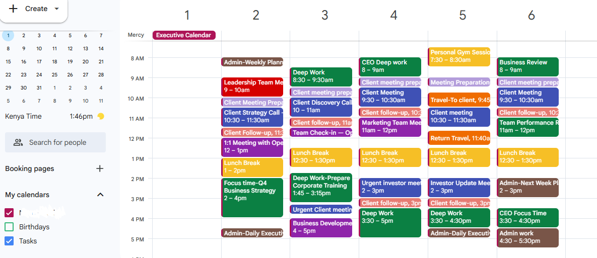
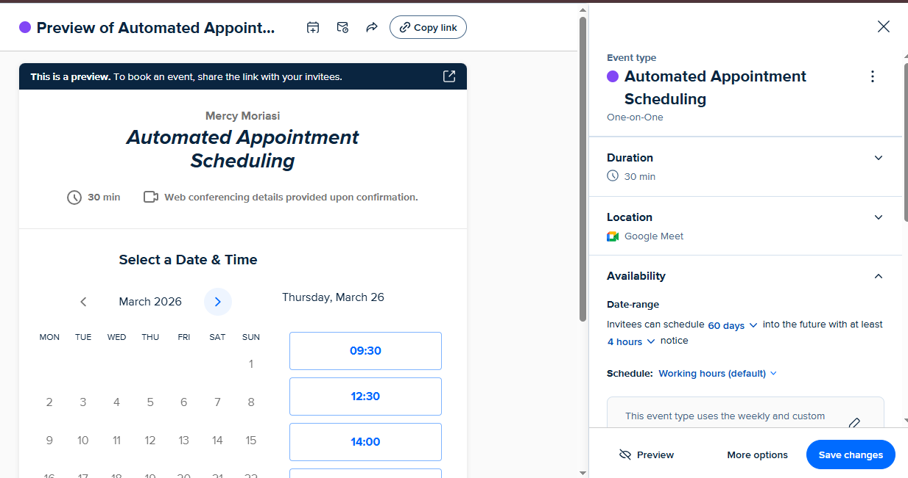
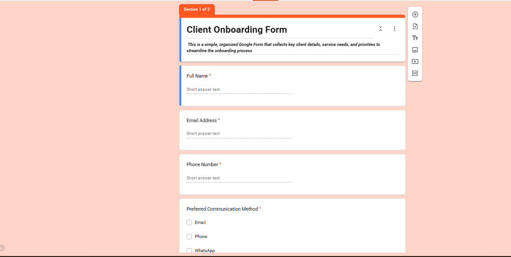

The organized hands behind a growing business.
I'm Mercyline Moriasi, a virtual assistant and graphic designer based in Nairobi, Kenya. I manage inboxes, calendars, and client operations for entrepreneurs — then design the graphics that make their brand look just as sharp.
Hello, I'm Mercyline. I help entrepreneurs run tighter, calmer businesses without hiring a full admin team.
For the past two years I've managed inboxes, calendars, and client communications for founders who needed their operations to move as fast as their ideas — while designing the social graphics, flyers, and marketing materials that keep their brand consistent everywhere it shows up.
I studied Political Science and Public Administration at Rongo University, which is honestly where the instinct for structure, documentation, and following through actually came from. Somewhere along the way that turned into a habit of colour-coding calendars and rebuilding client onboarding forms nobody asked for — but everybody ended up needing.
- Based in Nairobi, Kenya — working with clients remotely, worldwide
- Virtual assistance, social media support & graphic design
- Google Workspace, Canva, Adobe Photoshop, Calendly
- Comfortable picking up new tools and workflows fast
What I take off your plate
Four areas where entrepreneurs bring me in — usually because the day-to-day admin has started eating into the work that actually grows the business.
Email & calendar management
Filters, labels, and reusable templates that turn a chaotic inbox into something you can act on in minutes — plus a colour-coded calendar you can read at a glance.
- Inbox triage
- Email templates
- Calendly setup
- Meeting coordination
Client & project coordination
Structured onboarding forms, document systems, and follow-up tracking, so nothing about a client relationship depends on anyone's memory.
- Onboarding forms
- File organization
- Task follow-ups
- Data entry
Social media support
Content planning, captions, scheduling, and analytics tracking, so your channels stay active and on-brand even when you're heads-down elsewhere.
- Content calendars
- Post scheduling
- Caption writing
- Engagement tracking
Graphic design & branding
Social graphics, promotional flyers, and branded templates designed to look consistent across every platform your business shows up on.
- Social graphics
- Promo flyers
- Branded templates
- Marketing collateral
Inside a few projects
A closer look at the expected outcome, what I actually did, and the result. Click a tab to switch projects.
Turning a 3,000-email inbox into an empty primary tab
.PNG)
A colour-coded week an executive can read in five seconds

Booking that runs itself

One form that replaced a dozen back-and-forth emails

A few of the graphics I've designed
Social posts, promotional flyers, and branded content for clients across food, retail, real estate, and travel.
Tool kit
The platforms and software I use daily to manage admin work, design graphics, and keep client communication moving.
Design & content
Admin & productivity
Communication & CRM
AI-assisted workflows
Experience
A quick timeline of where this skill set was built — from public administration to remote client operations.
Administrative Virtual Assistant & Graphic Designer
Freelance, Remote- Manage client inboxes daily, flagging urgent matters and drafting replies for timely, professional communication.
- Schedule and coordinate meetings using Google Calendar and Calendly, preventing missed follow-ups and conflicts.
- Design branded graphics and marketing materials, boosting client engagement by 35%.
- Organize design files and client documentation with 100% traceability and quick retrieval.
Quality Checker & Data Annotator
CloudFactory Kenya, Remote- Reviewed and checked annotated data against project guidelines, maintaining 95% accuracy.
- Identified and corrected errors, improving consistency across deliverables.
- Processed high volumes of data while meeting daily deadlines.
Bachelor of Arts, Political Science & Public Administration
Rongo University, Migori County, KenyaLet's get your business organized.
Tell me a bit about what's eating up your time — inbox, calendar, client admin, or your next batch of social graphics — and I'll follow up within a day.